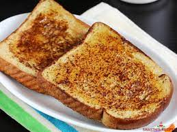

French Toast Recipe
This is the best basic breakfast meal

Ingredients
- ½ cup unsalted butter
- 1 cup packed brown sugar
- 2 tablespoons corn syrup
- 6 (1-inch thick) slices French bread
- 5 eggs
- 1 ½ cups half-and-half cream
- 1 teaspoon vanilla extract
- 1 teaspoon brandy-based orange liqueur (such as Grand Marnier®)
- ¼ teaspoon salt
Method
- Melt butter in a small saucepan over medium heat. Mix in brown sugar and corn syrup, stirring until sugar is dissolved.
Pour into a 9x13 inch baking dish.
- Remove crusts from bread, and arrange in the baking dish in a single layer. In a small bowl, whisk together eggs, half and half, vanilla extract, orange brandy, and salt. Pour over the bread. Cover, and chill at least 8 hours, or overnight.
- Preheat oven to 350 degrees F (175 degrees C). Remove the dish from the refrigerator, and bring to room temperature.
- Bake uncovered 35 to 40 minutes in the preheated oven, until puffed and lightly browned.